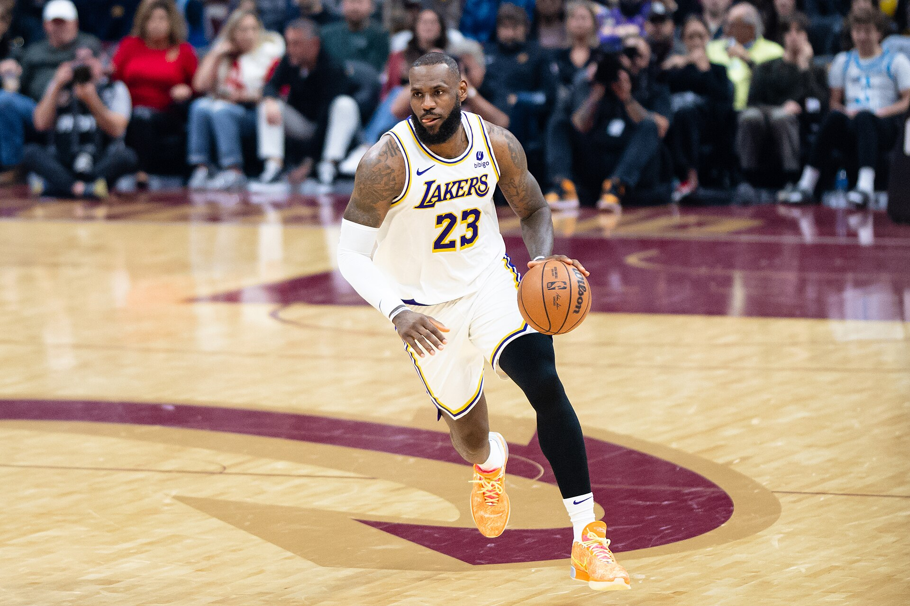

O futuro de LeBron James permanece como a principal indefinição do mercado da NBA. Aos 41 anos, o maior pontuador da história da liga já comunicou que não continuará no Los Angeles Lakers, mas ainda não revelou onde disputará a temporada 2026/27.
A decisão chama atenção não apenas pelo tamanho do jogador envolvido, mas pelo momento de sua carreira. LeBron prepara-se para disputar a 24ª temporada na NBA, ampliando o próprio recorde de longevidade. Mesmo sem apresentar os mesmos números dos anos de auge, o ala continua sendo um atleta produtivo, capaz de organizar ataques, criar oportunidades para os companheiros e decidir partidas importantes.
A nova escolha representa mais um capítulo da história do "King James", marcada por títulos, recordes e um legado único na NBA.
O agente Rich Paul afirmou que a escolha não será apressada. Segundo o empresário, as equipes interessadas já apresentaram as informações necessárias, e LeBron analisará o próximo passo no próprio ritmo. Portanto, apesar da expectativa criada em torno de um anúncio, não existe prazo oficial para a definição.
A única definição concreta é a saída do Los Angeles Lakers. Ele informou à franquia que pretende jogar por outra equipe em 2026/27, encerrando uma passagem de oito temporadas pela franquia. O contrato anterior chegou ao fim, colocando o jogador no mercado como agente livre. Essa é a primeira vez que LeBron vive uma situação semelhante desde quando deixou o Cleveland Cavaliers e assinou com o Lakers.
Contratado pela equipe de Los Angeles em julho de 2018, foi o principal nome do elenco que conquistou o título da NBA em 2020. A taça, levantada na “bolha” montada pela liga em Orlando durante a pandemia, encerrou um jejum de dez anos da franquia e acrescentou outro capítulo importante à história dos Lakers.
Além do campeonato, o período de LeBron em LA teve marcas históricas. Vestindo a camisa do time, ele ultrapassou Kareem Abdul-Jabbar e tornou-se o maior pontuador da história da temporada regular da NBA. Na temporada 2025/26, também superou o recorde de partidas disputadas na liga.
Em sua despedida pública, o astro agradeceu à organização, à família Buss, aos dirigentes, aos treinadores e aos companheiros. LeBron classificou a passagem de oito anos como uma trajetória especial, mas evitou revelar detalhes sobre o próximo destino.
Os números pelo Los Angeles Lakers
LeBron encerrou sua passagem com estatísticas que o colocam entre os jogadores mais produtivos da história recente da franquia.
O astro permaneceu por oito temporadas em Los Angeles e manteve alto nível ofensivo mesmo na reta final da carreira.
Números:
- 479 partidas disputadas
- 12.402 pontos
- 3.680 rebotes
- 3.808 assistências
- 1.020 bolas de três pontos convertidas
- 25,9 pontos por jogo
- 7,7 rebotes por jogo
- 7,9 assistências por jogo
- 51,3% de aproveitamento nos arremessos de quadra
Os totais consideram as oito temporadas de LeBron com a franquia, entre 2018/19 e 2025/26.
O principal momento da passagem aconteceu na temporada 2019/20. Quando comandou o Lakers na campanha do 17º título da NBA, conquistado na bolha de Orlando após vitória por 4 a 2 sobre o Miami Heat nas finais.
Números nas Finais de 2020:
- 29,8 pontos por jogo
- 11,8 rebotes por jogo
- 8,5 assistências por jogo
- 59,1% de aproveitamento nos arremessos
- MVP das Finais pela quarta vez na carreira
LeBron também foi protagonista de outra conquista importante.
Em 2023, liderou o Lakers ao primeiro título da Copa da NBA, competição criada naquele ano ainda com o nome de In-Season Tournament. A equipe fez uma campanha perfeita, com sete vitórias em sete jogos, e LeBron foi escolhido como o primeiro MVP da história do torneio.
Números na Copa da NBA de 2023:
- 26,4 pontos por jogo
- 8,0 rebotes por jogo
- 7,6 assistências por jogo
- 1,6 roubo de bola por jogo
- MVP da competição
Principais conquistas e campanhas pelo Lakers:
- Campeão da NBA em 2020
- MVP das Finais de 2020
- Campeão da Copa da NBA em 2023
- MVP da Copa da NBA de 2023
- Finalista da Conferência Oeste em 2023
- Oito seleções para o All-Star Game durante a passagem
- Sete escolhas para os times All-NBA durante a passagem
Na campanha de 2023, o Lakers saiu do play-in, eliminou o Memphis Grizzlies na primeira rodada e superou o então campeão Golden State Warriors nas semifinais do Oeste. A trajetória terminou na final da conferência, diante do Denver Nuggets.
Foi também vestindo a camisa do Lakers que LeBron ultrapassou Kareem Abdul-Jabbar e se tornou o maior pontuador da história da temporada regular da NBA. Ao final de 2025/26, ele acumulava na carreira:
- 43.440 pontos
- 12.095 rebotes
- 12.016 assistências
Mesmo sem construir uma dinastia, LeBron devolveu o Lakers ao topo da NBA após dez anos sem títulos e deixou uma passagem marcada por longevidade, produção ofensiva, recordes históricos e protagonismo em jogos decisivos.
Os times como possíveis destinos
Cleveland Cavaliers, Miami Heat, Philadelphia 76ers e Golden State Warriors estão entre as equipes mais mencionadas nas especulações sobre o futuro do jogador.
O Cleveland representa a possibilidade de uma terceira passagem pelo clube que selecionou LeBron na primeira escolha do Draft de 2003. Foi também com os Cavaliers que ele conquistou o histórico título de 2016, encerrando um jejum de 52 anos da cidade de Cleveland nas principais ligas esportivas dos Estados Unidos.
O Golden State Warriors poderia formar uma parceria histórica entre LeBron e Stephen Curry. A franquia teria demonstrado interesse na contratação, enquanto jogadores como Draymond Green participaram publicamente da movimentação para tentar convencer o veterano. Ainda assim, as conversas não produziram um acordo até o momento.
O Philadelphia 76ers aparece como uma alternativa no Leste, enquanto o Miami Heat proporcionaria o reencontro de LeBron com uma equipe pela qual foi campeão da NBA em 2012 e 2013.
A especulação envolvendo Miami aumentou depois que o clube publicou por engano um link para uma suposta entrevista coletiva de apresentação de LeBron, programada para 27 de julho. O conteúdo foi retirado, e um representante da franquia explicou que o material havia sido preparado apenas como precaução para a possibilidade de uma contratação.
O episódio, portanto, não representa confirmação de acordo.
Busca por competitividade deve pesar na decisão
A escolha provavelmente passará pela possibilidade real de disputar mais um título.
LeBron possui quatro campeonatos da NBA: dois pelo Miami Heat, um pelo Cleveland Cavaliers e um pelo Los Angeles Lakers.
Uma quinta conquista fortaleceria ainda mais uma carreira que já figura entre as maiores da história do basquete e do esporte em geral.
Também serão importantes o espaço salarial da equipe, a composição do elenco, a função oferecida ao jogador e as condições para preservar seu físico durante a temporada.
Aos 41 anos, controlar a carga de minutos e evitar sequências excessivas pode ser tão decisivo quanto a qualidade técnica dos futuros companheiros.
A presença do filho Bronny James no elenco do Lakers também adiciona uma camada pessoal à decisão.
Pai e filho fizeram história ao atuarem juntos pela franquia, mas agora podem iniciar a próxima temporada defendendo equipes diferentes.
Não existe uma data confirmada.
Rich Paul deixou claro que ele não pretende tomar a decisão apenas para atender à pressão da imprensa, das franquias ou da própria liga.
O jogador avaliará o cenário antes de assinar o que poderá ser o último contrato de sua carreira.
Por enquanto, o cenário é objetivo: LeBron James continuará jogando na NBA, não retornará ao Los Angeles Lakers e ainda não definiu publicamente sua nova equipe.
A escolha terá impacto imediato no equilíbrio da liga.
Seja em um retorno a Cleveland ou Miami, em uma parceria com Stephen Curry no Golden State ou em outro projeto competitivo, o anúncio movimentará o mercado e colocará um novo candidato sob os holofotes.
Até que isso aconteça, a 24ª temporada de LeBron permanece cercada pelo maior suspense da offseason da NBA